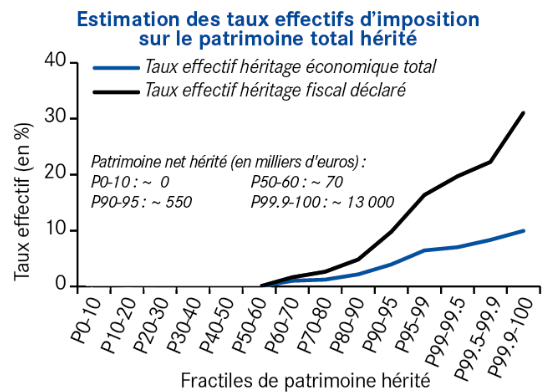
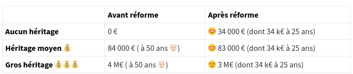

Ce site reprend l’idée de Thomas Picketty d’un héritage pour tous à 25 ans.
Il propose un simulateur de réforme qui s’appuie sur le rapport Repenser l’héritage, du Conseil d’Analyse Économique (CAE) qui démontre la faisabilité d’un tel projet.
L’objectif est d’ouvrir un débat public sur ce thème et d’inciter les partis politiques à s’en emparer.
Avec le vieillissement de la population, l’age moyen de l’héritage est passé de 30 ans au début du siècle dernier, à 50 ans aujourd’hui.
Les français qui héritent, héritent donc à un âge où ils sont déjà installés et ont déjà constitué un patrimoine.
C’est plus tôt dans la vie qu’un patrimoine de base est nécessaire : pour s’installer, obtenir un logement, lancer une activité, …
L’héritage constitue aujourd’hui plus de 60% du patrimoine total des ménages, réparti de manière très inégalitaire:
Si l’héritage était totalement égalitaire, chaque français hériterait de 370 000 €
Contrairement à une idée reçue, la taxation sur l’héritage est très faible et peu progressive :
La majorité des héritages en ligne directe ne sont pas du tout taxés, et le taux effectif d’imposition ne dépasse pas 10%, même pour les très hauts héritages (13 millions €)

L’idée est de socialiser une petite partie de l’héritage, pour mettre en place un héritage de base, versé à chaque français au début de sa vie active (25 ans par exemple).
Les travaux du CAE démontrent qu’il est possible de mettre en place une fiscalité plus progressive, qui dégagerait de 10 à 20 milliards de recettes supplémentaires, et permettrait de financer un héritage de base de 30 à 50 000 €.
Une telle réforme serait bénéfique pour plus de 95% des français.
Voici un exemple de résultat du simulateur :

Tester le simulateur